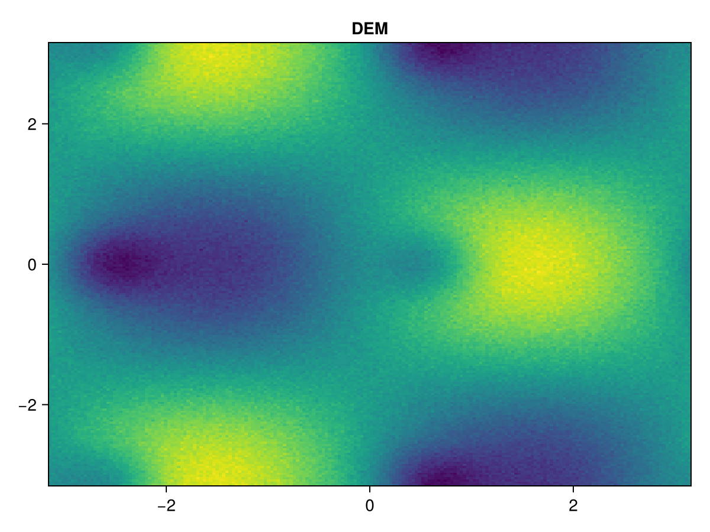
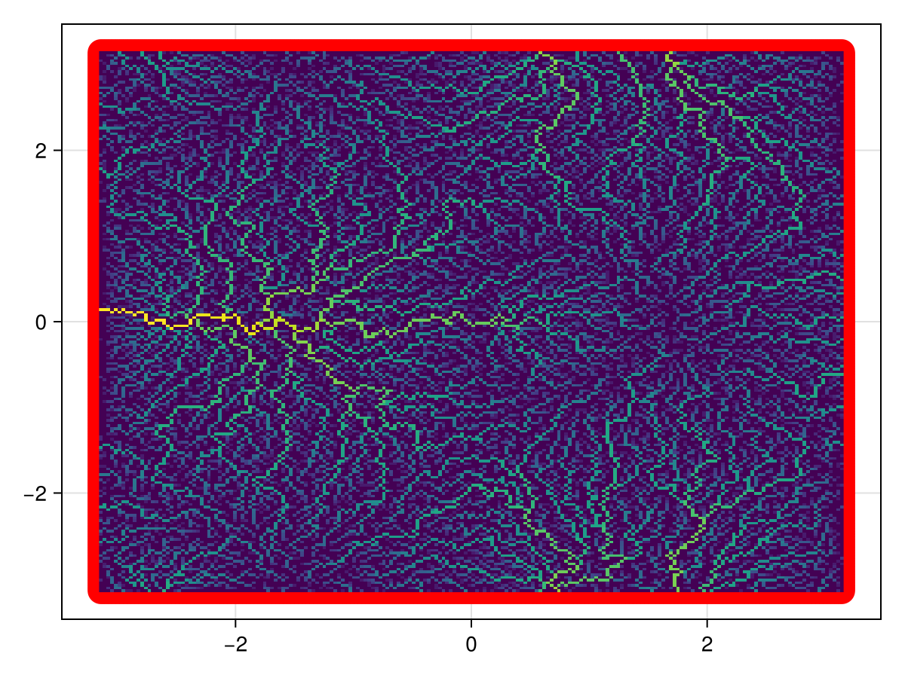
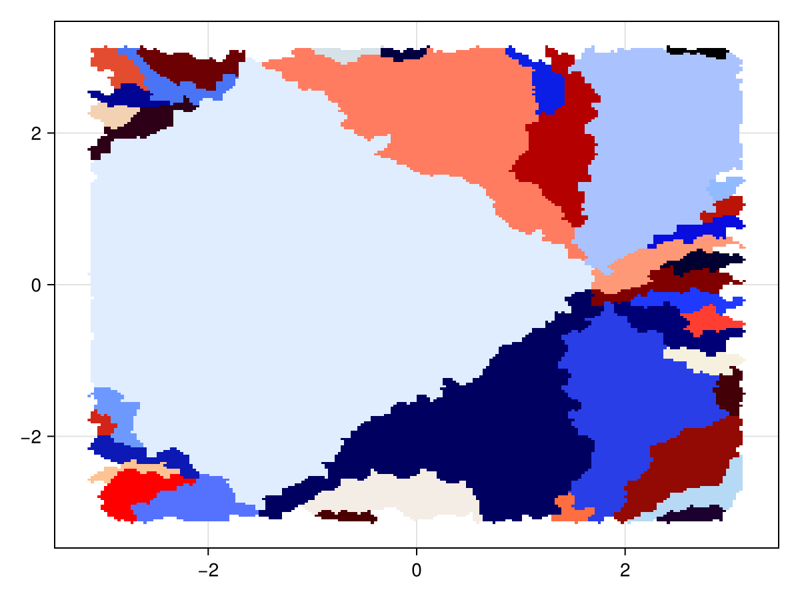
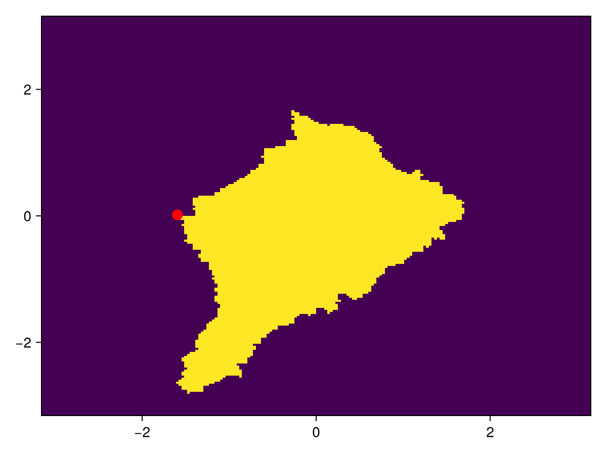
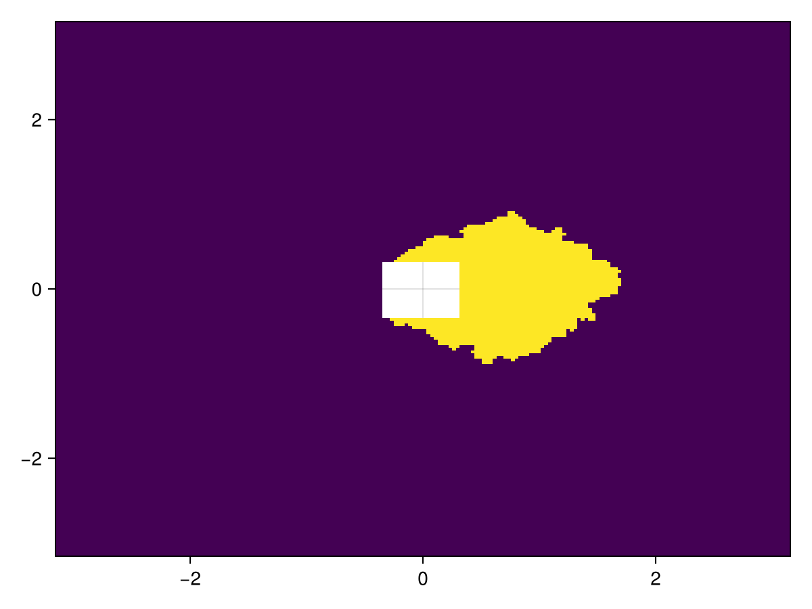
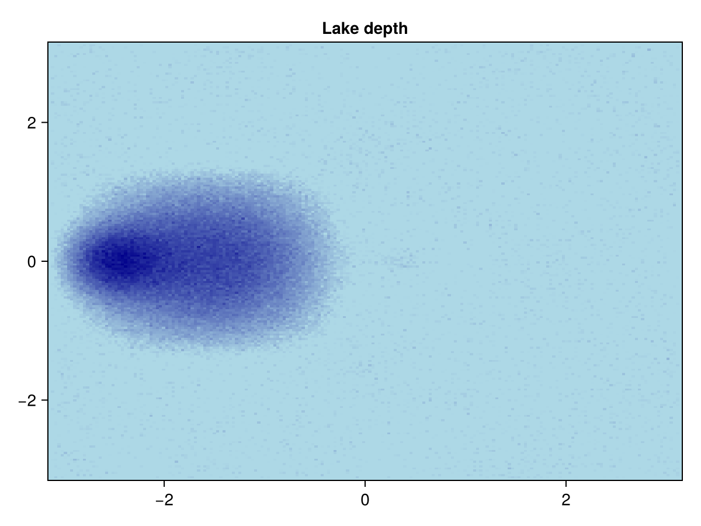
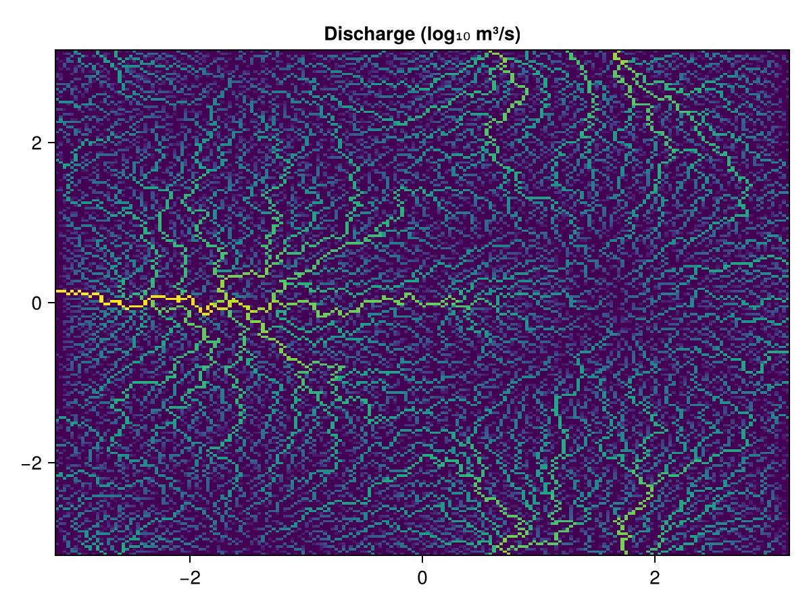
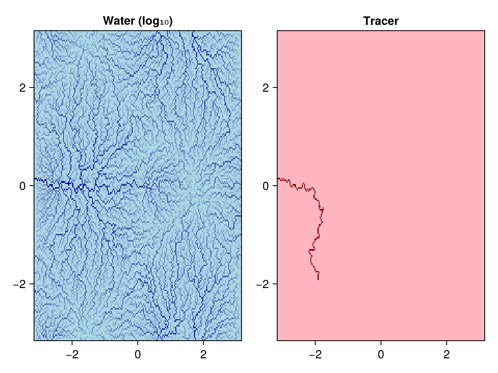

Tutorial
This tutorial walks through a complete flow-routing analysis on a synthetic DEM.
Setup
using WhereTheWaterFlows, CairoMakie, RandomBuild a synthetic DEM
We use a function that produces a landscape with a few hills, valleys, and a deliberate closed depression (pit):
function peaks2(n=100, randfac=0.05)
coords = range(-π, π, length=n)
return coords, coords,
sin.(coords) .* cos.(coords') .-
0.7 .* (sin.(coords .+ 1) .* cos.(coords')).^8 .+
randfac .* randn(n, n)
end
Random.seed!(42)
x, y, dem = peaks2(200)
heatmap(x, y, dem; axis=(title="DEM",))
Run the flow router
(; area, slen, dir, nout, nin, sinks, pits, c, bnds) = waterflows(dem)waterflows returns a NamedTuple with the following fields:
| Name | Description |
|---|---|
area | Upslope area at each cell (cell count, or physical flux if cellarea is supplied) |
slen | Stream length: number of cells from the farthest upstream source |
dir | D8 flow direction at each cell, encoded as an integer 1–9 |
nout | true if the cell has a downstream neighbour, false if it is a pit |
nin | Number of upstream neighbours flowing into each cell |
sinks | Boundary/NaN-adjacent sink cells |
pits | Interior pit cells (local minima) |
c | Integer catchment map |
bnds | Boundary-cell lists, one per catchment |
flowdir_extra_output | Extra output from a custom flowdir_fn (nothing for the default) |
Upslope area
plt_area plots the log₁₀ upslope area. Sink locations are marked in red.
plt_area(x, y, area; sinks)
Catchments
plt_catchments colours each catchment uniquely. Catchments smaller than minsize cells are hidden.
plt_catchments(x, y, c; minsize=50)
Delineate a single catchment
Pick the cell with the largest upslope area along row 50 and trace everything draining into it:
i = 50
j = findmax(area[i, :])[2]
cc = catchment(dir, CartesianIndex(i, j))
fig, ax, _ = heatmap(x, y, Float64.(cc))
scatter!(ax, [x[i]], [y[j]]; color=:red, markersize=15)
fig
Delineate the catchment upstream of a box
Pass a CartesianIndices rectangle to catchment to collect every cell draining into that region:
box = CartesianIndices((90:110, 90:110))
cc2 = Float64.(catchment(dir, box))
cc2[box] .= NaN
heatmap(x, y, cc2)
Fill depressions
After waterflows (with drain_pits=true, the default), flow directions are consistent across depressions. fill_dem raises each pit cell to its spillway elevation, useful for visualising lake depth:
demf = fill_dem(dem, sinks, dir)
heatmap(x, y, demf .- dem; colormap=:blues, axis=(title="Lake depth",))
Key keyword arguments of waterflows
| Keyword | Default | Meaning |
|---|---|---|
drain_pits | true | Route water through pits via the lowest spillway |
bnd_as_sink | true | Domain-boundary cells act as sinks |
nan_as_sink | true | Cells adjacent to NaN DEM values become sinks |
cellarea | ones array | Source flux per cell; can be a tuple for multiple tracers |
feedback_fn | nothing | Applied to accumulated area before routing downstream |
Routing physical fluxes
Set cellarea to a physical value (e.g. precipitation in m³/s per cell) to accumulate real fluxes rather than cell counts:
precip = 1e-3 .* ones(size(dem)) # uniform 1 mm/s
discharge = waterflows(dem, precip).area
heatmap(x, y, log10.(discharge); colormap=:viridis, axis=(title="Discharge (log₁₀ m³/s)",))
Routing multiple quantities simultaneously
Pass a tuple of arrays as cellarea to accumulate several quantities at once. All quantities must be extensive (additive), e.g. energy not temperature. Here we route uniform water alongside a point tracer:
water = ones(size(dem))
tracer = zeros(size(dem))
tracer[40, 40] = 1.0 # single point source
(water_area, tracer_area), = waterflows(dem, (water, tracer))
fig = Figure()
heatmap(fig[1, 1], x, y, log10.(water_area); colormap=:blues, axis=(title="Water (log₁₀)",))
heatmap(fig[1, 2], x, y, tracer_area; colormap=:reds, axis=(title="Tracer",))
fig